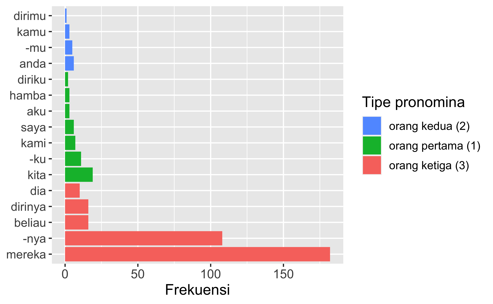
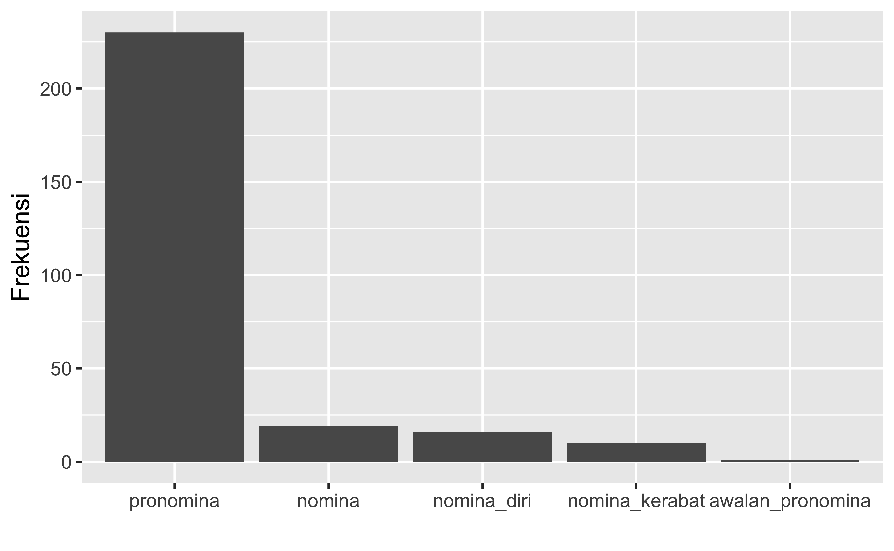
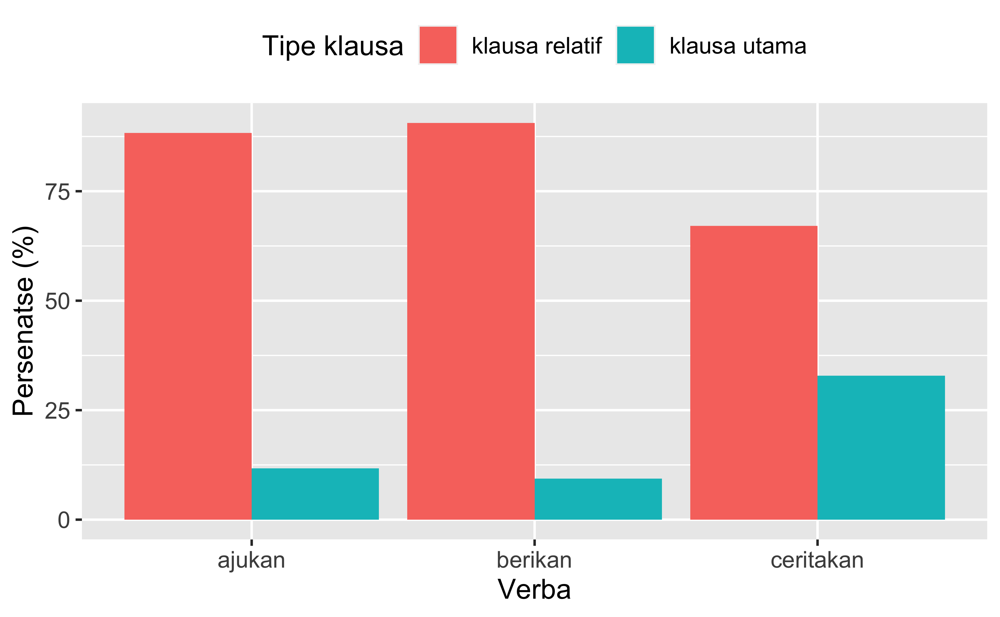

Makalah ini menampilkan kajian korpus kuantitatif guna (i) meninjau kembali sejumlah fitur diatesis dalam bahasa Indonesia yang diajukan pada buku-buku acuan terdahulu, dan (ii) menawarkan sudut pandang baru terkait adanya preferensi leksikal dan idiosinkrasi dalam tata bahasa secara luas. Terkait tipe AGEN diatesis pasif di- dan diatesis non-aktor, kami menunjukkan bahwa gagasan terdahulu masih didukung oleh data. Akan tetapi, ditemukan juga ketimpangan preferensi bentuk AGEN pronomina terhadap verba tertentu, yang dapat mencerminkan konseptualisasi berbeda atas kejadian yang dirujuk verba tersebut. Analisis terhadap diatesis medial ber- dan ber-/-an menunjukkan bahwa diatesis medial merupakan suatu konstruksi dengan beragam makna yang menunjukkan perbedaan produktivitas pada tataran semantis. Terakhir, kami juga menunjukkan bahwa fenomena yang dipandang bersifat alternasi antara aktif/pasif (khususnya konstruksi aktif [meN-+v] vs. pasif [di-+v]) juga menunjukkan adanya preferensi leksikal terkait (i) verba mana yang lebih khas muncul dalam konstruksi diatesis tertentu dan (ii) bagaimana kekhasan leksikal tersebut mengungkap nilai semantis dari konstruksi gramatikal tersebut.
Rajeg, G. P. W. and Artawa, K. (2024) “Kajian korpus kuantitatif terhadap aspek-aspek diatesis dalam bahasa Indonesia”. https://doi.org/10.5281/zenodo.10615406.
Bab buku ini menjadi bagian dari kolaborasi penulisan Tata Bahasa Indonesia Kontemporer (TBIK) berbasis korpus antara penulis dan Pusat Pengembangan dan Pelindungan Bahasa dan Sastra. Bab buku lain yang ditulis oleh penulis pertama dalam proyek yang sama dengan topik morfologi dapat dilihat pada tautan berikut: https://doi.org/10.6084/m9.figshare.22336729
Menurut Zúñiga dan Kittilä [1, p. 4], diatesis merujuk pada bagaimana partisipan (atau peran semantis [semantic role]) dalam suatu kejadian (yang diungkapkan oleh predikat verbal) dipetakan pada peran gramatikal dalam suatu kalimat. Peran gramatikal meliputi subjek, objek, pelengkap (complement), dan keterangan (adjunct), sedangkan peran semantis bisa meliputi AGEN/PELAKU, PENDERITA (patient), TEMA, PENERIMA, PENGALAM, STIMULUS, SUMBER, TUJUAN AKHIR (goal), dll. [1, p. 4]. Dalam kalimat, pemetaan peran semantis pada peran gramatikal tersebut ditunjukkan melalui apa yang disebut dengan pemarkahan diatesis, atau grammatical voice. Pemarkahan ini terpusat pada predikat verbal dari kalimat. Selain dari sudut pandang pemarkahan morfologi dan pemilihan argumen/peran semantis yang dijadikan subjek kalimat, diatesis secara konseptual dalam Linguistik Kognitif (utamanya Cognitive Grammar[2, pp. 382–386], [3]) dipandang sebagai “strategi alternasi” ketika mengkonseptualisasikan, dan menonjolkan partisipan dalam, suatu kejadian (lihat juga [4]).
Dalam bahasa Indonesia (BI), terdapat empat jenis diatesis: (i) diatesis aktif (active/agentive voice, disingkat [AV]), (ii) diatesis medial (middle voice [MID] (§ 4.2)), (iii) diatesis pasif (passive voice [PASS]), dan (iv) diatesis non-aktor (objective voice [OV] dalam terminologi Arka dan Manning [5, p. 52], atau yang lebih umum disebut undergoer voice [UV] [6]; diatesis non-aktor selanjutnya akan disingkat dengan OV/UV). Diatesis aktif (contoh (1)) memetakan partisipan mirip AGEN (agent-like role) sebagai subjek kalimat (lihat ia pada contoh (1)). Secara morfologis, diatesis aktif BI ditunjukkan oleh pemarkahan predikat verbal dengan awalan meN-.
Karena itu iaAGEN mulai menuliskan [ide-ide itu]TEMA menjadi rangkaian cerita. (B3Z12025)
Sebaliknya, diatesis pasif (contoh (2)) memetakan partisipan yang bukan AGEN (mis. PENDERITA [PATIENT], TEMA [THEME]) sebagai subjek kalimat [5], [7, pp. 181–182], [8]. Dari segi pemarkahan pada predikat verbal, diatesis pasif ditandai dengan awalan di-[5], [8]–[10].
(…) [kisah kami]TEMAdituliskan menjadi novel di Kota Tishri. (D1A18005)
Diatesis non-aktor (OV/UV) [5, p. 52] (contoh (3)) mirip dengan AV dari segi transitifitas verbanya (yang masih sama-sama transitif) [6, p. 115]. OV/UV juga mirip dengan PASS dari segi pemetaan partisipan bukan AGEN (sehingga disebut diatesis non-aktor) sebagai subjek kalimat; pada contoh (3), peran non-aktor yang menjadi subjek kalimat adalah peran TEMA.
[Hasil penafsiran atas fakta-fakta itu]TEMA kitaAGENtuliskan menjadi suatu kisah sejarah yang selaras. (G1C20001)
Dalam Tata Bahasa Baku Bahasa Indonesia (TBBBI) [9, pp. 471–472], konstruksi pada contoh (3) dianggap sebagai konstruksi pasif (tipe kedua). Akan tetapi, Arka [6], juga Arka dan Manning [5], telah menunjukkan bukti-bukti bahwa konstruksi seperti (3) berbeda dengan konstruksi pasif, sehingga dipandang sebagai konstruksi diatesis tersendiri dan disebut diatesis non-aktor (OV/UV), suatu diatesis yang merupakan konsensus mutakhir dari sejumlah kajian diatesis pada bahasa Austronesia [6], [11]. Selain ketiga diatesis di atas, kami juga mengulas diatesis medial (§ 4.2), utamanya yang dimarkahi dengan awalan ber- (§ 4.2.1) dan konfiks ber-/-an (§ 4.2.2).
Makalah ini memusatkan pembahasan pada bagaimana keberlimpahan data dan analisis kuantitatif dapat dimanfaatkan untuk (i) meninjau kembali sejumlah gagasan terkait ciri-ciri diatesis (§ 4.1), dan (ii) menjelajahi isu terkini atas batasan leksikal suatu konstruksi gramatikal, seperti diatesis (§ 4.3).
2 Kajian pustaka
Buku-buku tata bahasa BI [9], [10], [12] telah mengulas bentuk kata kerja penanda kalimat aktif dan “kaidah umum untuk pembentukan kalimat pasif dari kalimat aktif” [12, p. 345]. Akan tetapi, kajian kuantitatif terhadap data korpus dalam makalah ini (§ 4.3), dan yang telah dilakukan sebelumnya [13], [14], akan menunjukkan bahwa bentuk pasif tidak harus memiliki bentuk aktif, dan oleh karena itu, bentuk pasif mesti dipandang sebagai suatu unit konstruksi tersendiri yang bukan dan tidak selalu merupakan transformasi dari bentuk aktif.
Sebelum penulisan makalah ini, kajian korpus kuantitatif dan eksperimental termutakhir atas diatesis BI [13], [14] juga telah menunjukkan bahwa bentuk pasif berbeda dengan bentuk aktif dari segi preferensi semantisnya (yaitu kecenderungan mengungkapkan makna tertentu dalam bentuk tertentu) dan mesti dipandang sebagai unit konstruksi mandiri. Misalnya, makna ‘mewajibkan’ dari verba kenai lebih signifikan diasosiasikan dengan bentuk pasif dikenai dan tidak pernah diungkapkan dalam bentuk aktif mengenai, yang mengungkapkan arti fisik [13]. Perbedaan makna ini juga menunjukkan bahwa makna tertentu dapat langsung diungkapkan dalam bentuk pasif tanpa perlu memiliki bentuk aktifnya. Kajian eksperimental [14] juga menunjukkan bahwa penutur merekam, dalam khasanah kebahasaan mereka, bentuk diatesis yang dominan digunakan untuk mengungkapkan makna tertentu dari suatu verba. Preferensi semantis ini juga mengindikasikan bahwa komponen yang dipandang secara tradisional sebagai suatu kaidah tata bahasa (misalnya alternasi aktif-pasif) memiliki kekhasan dan batasan leksikal [15] (lihat § 4.3). Kemudian, ulasan fungsi, makna dan produktivitas pemarkah diatesis aktif meN- beserta kaitannya dengan transitivitas telah dibahas pada tulisan lain terkait proyek ini oleh Rajeg dan Denistia [16]; makalah kali ini menitikberatkan pada fitur diatesis pasif dan non-aktor (OV/UV) (§ 4.1) yang tidak dibahas pada tulisan tersebut. Diatesis bahasa Indonesia juga telah diulas dari sudut pandang teoretis [5], [17] dan tipologis [8] yang kali ini akan dilanjutkan dengan nuansa kuantitatif.
Selanjutnya, beberapa kajian teoretis terkait diatesis medial (§ 4.2) dalam BI dan bahasa terkait (mis. bahasa Bali) telah dilakukan dalam kurun waktu sepuluh tahun terakhir [18]–[20]. Secara umum, ketiga kajian terdahulu tersebut membahas aspek sintaksis dan semantis dari diatesis medial BI. Salah satu analisis yang diajukan oleh Udayana [19], juga Beaver dan Udayana [20], adalah bahwa ber- berfungsi untuk meniadakan salah satu argumen dari verba transitif dasar yang melekat pada ber-. Tulisan terkait lainnya [16] juga telah mengulas secara kualitatif beragam arti ber-, beserta produktivitas morfologisnya namun bukan produktivitas semantisnya. Makalah kami memusatkan analisis produktivitas semantis bentukan verba dalam diatesis medial (§ 4.2). Kami akan menunjukkan bahwa produktivitas suatu diatesis berdasarkan satu afiks dapat berbeda pada tataran semantis.
3 Metodologi
Sumber data makalah ini adalah Korpus Referensi Tata Bahasa Indonesia Kontemporer (TBIK) yang dibangun oleh Pusat Pengembangan dan Pelindungan Bahasa dan Sastra, Badan Pengembangan dan Pembinaan Bahasa, Kementerian Pendidikan, Kebudayaan, Riset, dan Teknologi. Korpus ini berukuran sekitar 18 juta kemunculan kata dan terdiri atas dua belas ragam teks tulis BI dari tahun 2011-2020. Kedua belas ragam tersebut adalah Biografi, Buku Teks, Cerpen, Disertasi/Tesis/Skripsi, Jurnal, Koran, Laman Resmi, Majalah, Novel, Perundang-undangan, Populer, dan Surat Resmi.
Selain digunakan sebagai sumber contoh dan juga dianalisis secara manual terkait sejumlah fitur diatesis yang diteliti, korpus tersebut juga kami olah secara komputasional dalam hal analisis pemecahan komponen morfologis, menggunakan peranti lunak MorphInd[21] dan dibantu dengan MALINDO Morph[22]. Luaran analisis komputasional tersebut kemudian diperiksa kembali secara manual. Selanjutnya, data morfologis tersebut digunakan untuk kajian produktivitas morfologis verba untuk topik bab buku lain dalam seri ini [16]. Pada makalah ini, bank data verba tersebut, yaitu VerbInd2[23], akan digunakan sebagai data kuantitatif distribusi diatesis berkaitan dengan bentuk morfologi dan maknanya (mis. pada § 4.2).
Makalah ini juga akan menampilkan satu model analisis kuantitatif yang dapat dilakukan dengan data kuantitatif dari korpus dalam konteks kajian alternasi (morfo)sintaksis, dan juga interaksi antara unsur leksikal dan konstruksi gramatikal [15], [24]. Gries dan Stefanowitsch [25] mengajukan metode yang dalam BI kami sebut “Analisis Koleksem Khas” (terjemahan dari label aslinya, yaitu Distinctive Collexeme Analysis dan yang seterusnya akan disebut dengan [DCA]). DCA berfungsi untuk menelusuri preferensi leksikal verba terhadap sepasang konstruksi yang (i) mirip secara semantis (mis. konstruksi BE GOING TO+Infinitive vs. WILL+Infinitive dalam bahasa Inggris), dan/atau (ii) yang menunjukkan alternasi (seperti konstruksi objek ganda vs. konstruksi datif). Salah satu pasangan konstruksi yang dikaji oleh Gries dan Stefanowitsch [25] adalah konstruksi aktif dan pasif bahasa Inggris, dengan fokus preferensi verba yang cenderung muncul pada salah satu dari kedua konstruksi tersebut. DCA juga telah diterapkan pada data bahasa Indonesia untuk kajian (i) preferensi verba terhadap negasi tak vs. tidak[26], (ii) preferensi akar kata ajektiva terhadap afiks kausatif PER- dan -KAN [27], dan (iii) perbedaan semantis verba sinonim perbesar vs. besarkan dengan afiks kausatif PER- dan -KAN [28]. Penerapan DCA untuk kajian alternasi diatesis telah diterapkan dalam bahasa Besemah (Melayu Polinesia Barat, di Sumatra) [29]. McDonnell [29] menemukan adanya preferensi leksikal antara verba tertentu yang lebih sering muncul dalam diatesis aktif dibandingkan diatesis non-aktor (OV/UV) dalam bahasa Besemah. Ulasan lebih lanjut terkait mekanisme dalam DCA akan dijelaskan di awal § 4.3.1.3
4 Hasil dan pembahasan
4.1 Kajian korpus atas sejumlah fitur kunci diatesis pasif di- dan diatesis non-aktor (OV/UV)
4.1.1 Kemunculan eksplisit AGEN pada diatesis pasif di-
Sejumlah buku tata bahasa (mis. [9, p. 470], [10, p. 257]) menyebutkan bahwa frasa yang menyatakan AGEN (yang ditandai dengan kata oleh) bersifat opsional/manasuka. Pengecualiannya adalah frase oleh wajib muncul jika verba dan oleh dipisahkan oleh kata/frasa lain yang menunjukkan keterangan (perhatikan contoh (4)). Namun, kami juga menemukan bahwa oleh dapat dihilangkan meskipun terdapat kemunculan kata setelah verba dan sebelum AGEN (contoh (5)).
Semua ditolakhalusoleh mereka. (H1A11007)
(…) seorang yang dikenalbaik Presiden Soekarno. (H1A17003)
Penelitian lebih lanjut dapat mengamati seberapa sering oleh tidak muncul dalam konteks seperti pada contoh (5) di atas.
Pada bagian ini kami ingin membahas distribusi/tingkat ke(tidak)munculan AGEN dalam frase dengan oleh pada ke-12 ragam teks korpusnya. Kami mengamati 50 sampel kalimat acak dengan pasif di- untuk tiap-tiap ragam teks, dengan total 600 butir data (50 kalimat * 12 ragam teks). Pola pencarian kompleks (regular expression) yang kami gunakan untuk menjaring bentuk pasif potensial adalah di[a-z]{5,}. Selanjutnya, secara manual kami menandai apakah sampel kalimat pasif tersebut menyebutkan secara eksplisit (atau tidak) peran AGEN. Gambar 1 menyarikan distribusi dari hasil analisis tersebut.
Gambar 1: Distribusi (tidak) diungkapkannya AGEN pada 50 sampel kalimat pasif di- untuk masing-masing ragam teks.
Secara umum, peran AGEN lebih sering tidak diungkapkan secara eksplisit (median = 75.26%) pada sampel data dari keseluruhan ragam teks yang diteliti, dan sangat jarang diungkapkan eksplisit (median = 24.74%). Temuan ini memberikan dukungan kuantitatif terkait fungsi dasar dari diatesis pasif, yaitu pelatarbelakangan (defocusing) dan/atau peniadaan/penghilangan (demotion) AGEN [30, p. 151], [31, p. 830]. Hal ini dapat dimotivasi atas keberadaan AGEN yang tidak penting dan/atau telah diketahui sebelumnya.
Yang juga kami temukan adalah terdapat keberimbangan antara cara mengungkapkan AGEN ketika peran ini disebutkan secara eksplisit. Buku tata bahasa menyebutkan bahwa AGEN dapat secara opsional ditandai dengan oleh (seperti pada contoh (6)) ataupun tidak ditandai oleh dan muncul sebagai (pro)nomina (yaitu OJK pada contoh (7)).
Perusahaan ini dimilikioleh [satu orang]AGEN (…). (I1H19001)
Pemberitahuan LAPS dikeluarkan dari Daftar LAPS sebagaimana dimaksud pada angka 3 disampaikan [OJK]AGEN kepada LAPS melalui surat. (L1H16001)
Kedua cara tersebut memiliki frekuensi yang sama pada sampel yang kami teliti (yaitu sama-sama digunakan sebanyak 63 kali atau 43.2% dari total 146 data yang mengungkapkan AGEN secara eksplisit). Temuan ini secara tentatif dapat memberikan pengukuran atas apa yang dimaksud dengan konsep mana-suka dari penggunaan oleh dalam pengungkapan AGEN verba pasif di-. Implikasi lain dari temuan ini menunjukkan kesetaraan status AGEN (baik yang dimarkahi dengan oleh ataupun tidak) sebagai fungsi oblik (tidak merupakan argumen sintaksis inti) dalam konstruksi pasif di-; status ini berbeda dengan status AGEN pada diatesis non-aktor yang masih merupakan argumen sintaksis inti sehingga konstruksi diatesis non-aktor masih bersifat transitif secara sintaksis [5]. Oleh karena itu, konstruksi diatesis non-aktor bukanlah sejenis konstruksi pasif seperti yang disebutkan di TBBBI.
Cara lain pengungkapan AGEN yang ditemukan adalah penggunaan akhiran -nya (n = 20; 13.7 %) yang langsung dilekatkan pada verba pasifnya (contoh (8)).
Seseorang mendapatkan haknya dikarenakan dipenuhinya kewajiban yang dimiliki. (E1C17001)
Setelah mengamati tendensi pengungkapan AGEN pada sampel 600 butir kalimat, § 4.1.2 membahas tipe AGEN pada diatesis pasif di-.
Sneddon dkk. [10, p. 258] menyatakan pasif di- digunakan jika AGEN adalah pronomina ketiga (mis. dia, ia, mereka) atau nomina. Namun, Sneddon dkk. [10, p. 259] juga menyebutkan bahwa pasif di- mulai sering digunakan dengan AGEN pronomina pertama (mis. saya, aku, kami, dsb.) dan pronomina kedua (mis. kamu, Anda, dsb.). Untuk meninjau kembali gagasan tersebut di dalam korpus, kami melakukan pencarian melalui CQP Web bentuk di- yang diikuti dengan oleh dan beragam jenis pronomina bentuk pertama, kedua dan ketiga. Karena pencarian ini bersifat kompleks, kami memanfaatkan fitur CQP Syntax pada CQP Web. Berikut ini adalah pola pencarian yang kami gunakan:
Luaran tiap-tiap pencarian tersebut kami sarikan melalui Gambar 2.
Code
di_agent_pronoun_count <- di_agent_pronoun |>mutate(pronomina_lex =str_replace(pronomina_lex, "^(ku|mu|nya)$", "-\\1")) |>count(pronomina, pronomina_lex) %>%mutate(pronomina =fct_relevel(as.factor(pronomina),c("orang ketiga (3)","orang pertama (1)","orang kedua (2)"))) %>%arrange(pronomina, desc(n))
Code
di_agent_pron_1 <- di_agent_pronoun_count |>group_by(pronomina) |>tally(n)di_agen_pron_1_chisq <-chisq.test(di_agent_pron_1$n)di_agen_pron_2 <- di_agent_pronoun_count |>mutate(pronomina_lex =fct_relevel(pronomina_lex, di_agent_pronoun_count$pronomina_lex))di_agent_pron_1 |>ggplot(aes(x = pronomina, y = n, fill = pronomina)) +geom_bar(stat ="identity") +labs(y ="Frekuensi",fill ="",x ="Tipe pronomina") +theme(legend.position ="none",axis.text.x.bottom =element_text(size =11),axis.title.x.bottom =element_text(size =13),axis.text.y =element_text(size =11),axis.title.y =element_text(size =13))di_agen_pron_2 |>ggplot(aes(x = pronomina_lex, y = n, fill = pronomina)) +geom_bar(stat ="identity") +coord_flip() +scale_fill_discrete(breaks =c("orang kedua (2)", "orang pertama (1)", "orang ketiga (3)")) +labs(x =NULL,y ="Frekuensi",fill ="Tipe pronomina") +theme(axis.text.x =element_text(size =11),axis.title.x =element_text(size =13),axis.text.y =element_text(size =10.5),axis.title.y =element_text(size =13),legend.text =element_text(size =10),legend.title =element_text(size =13))
(a) Tipe AGEN pronomina

(b) Bentuk leksikal AGEN pronomina
Gambar 2: Frekuensi tipe AGEN pronomina dalam diatesis pasif di- dalam konstruksi [di- oleh AGEN]
Data pada Gambar 2 (a) menunjukkan bahwa AGEN pronomina pertama (contoh (9) berikut) dan kedua (10) juga dapat digunakan, meskipun secara signifikan tidak sedominan AGEN pronomina bentuk ketiga (\(\chi^{2}\) = 454.14, df = 2, pgoodness-of-fit < 0.001). Temuan ini sejalan dengan temuan kuantitatif atas pasif di- pada bahasa Melayu Malaysia [32].
…keahlian yang sejak dulu dikembangkan Pak AB dan diteruskan olehsaya (H1A20004)
“Kalung itu hanya bisa dibuka olehkamu” (C1A15015)
Selanjutnya, tidak semua bentuk untuk tiap-tiap tipe pronomina memiliki frekuensi yang sama (perhatikan Gambar 2 (b)). Misalnya, untuk AGEN pronomina pertama, kita (pronomina pertama jamak) yang paling tinggi frekuensinya dibandingkan saya ataupun aku. Begitupun dengan AGEN pronomina ketiga, yang didominasi oleh pronomina jamak mereka. Kemudian, pengungkapan AGEN menggunakan klitik pronomina -nya (ketiga; olehnya), -ku (pertama; olehku), dan -mu (kedua; olehmu) adalah yang paling sering kedua di tiap-tiap tipe pronomina.
Nomoto dan Wahab [32, pp. 40–41] mengajukan analisis atas adanya tren batasan tipe pronomina untuk pasif di-. Analisis ini mencakup struktur informasi terkait partisipan mana yang lebih menonjol dalam kejadian tutur; dalam hal ini, pronomina pertama dan kedua dikatakan lebih menonjol dalam suatu kejadian tutur atas dasar kedua pronomina tersebut saling berbagi pengetahuan/informasi (yaitu memiliki “common ground” [32, p. 40]), namun tidak untuk pronomina ketiga. Karenanya, Nomoto dan Wahab [32, p. 40] berpendapat bahwa dominasi pronomina ketiga (seperti ditunjukkan pada Gambar 2 (a)) mengindikasikan bahwa AGEN dari pasif di- bukanlah suatu acuan/entitas yang menonjol (“non-salient” [32, p. 41]).
Selain pasif di-, buku TBBBI mengajukan tipe pasif kedua, yang disebut dengan pasif pronomina seperti pada contoh (11) berikut (dan contoh (3) pada § 1). Seperti disebutkan pada § 1, kalimat pada (11) bukanlah kalimat pasif namun merupakan diatesis non-aktor (OV/UV) berdasarkan bukti-bukti pada kajian sebelumnya [5], [6]; sehingga label “pasif” tidak lagi digunakan dalam makalah ini untuk konstruksi seperti pada (11). Bentuk diatesis pasif di- ditampilkan pada (12).
[Panas terik matahari]TEMA tak [ia]AGENhiraukan demi mendapatkan penghasilan (B1Z19008)
[Rasa sakit itu]TEMA tak lagi dihiraukan [Komar]AGEN (D1A14002)
Perbedaan OV/UV dengan pasif di- (12) adalah (i) verba yang tidak dimarkahi di- dan (ii) posisi AGEN (yaitu ia pada contoh (11)) yang mendahului verbanya. Selain itu pasif di- secara sintaksis bersifat intransitif (karena AGEN-nya dapat dihilangkan dan/atau mengisi posisi argumen non-inti [6]) sedangkan OV/UV adalah transitif. Bentuk seperti (11) disebut pasif pronomina dalam TBBBI karena diasumsikan hanya digunakan jika AGEN-nya adalah pronomina persona (bukan nomina biasa) [9, pp. 470–471]. Berdasarkan data korpus, kami meninjau apakah OV/UV hanya digunakan dengan AGEN pronomina persona saja dan seberapa tinggi frekuensinya.
Sebagai ilustrasi, Gambar 3 menampilkan tipe AGEN pada OV/UV untuk verba berikan.
Code
ggplot(ov_agent_berikan,aes(x = AGENT_TYPE,y = Freq)) +geom_bar(stat ="identity") +labs(y ="Frekuensi", x ="") +theme(axis.text =element_text(size =9.25),axis.title =element_text(size =12))ov_agent_pronomina1 <- ov_agent_pronomina |>left_join(di_agen_pron_2 |>select(1, AGENT_LEX = pronomina_lex),by =join_by(AGENT_LEX)) |>mutate(pronomina =replace(pronomina, AGENT_LEX =="ia", "orang ketiga (3)"), pronomina =replace(pronomina, AGENT_LEX =="kau", "orang kedua (2)"), pronomina =replace(pronomina, AGENT_LEX =="kalian", "orang kedua (2)")) |>group_by(pronomina) |>arrange(pronomina, desc(Freq))ov_agent_pronomina1 <- ov_agent_pronomina1 |>mutate(AGENT_LEX =fct_relevel(AGENT_LEX, as.character(ov_agent_pronomina1$AGENT_LEX)))ggplot(ov_agent_pronomina1,aes(x = AGENT_LEX,y = Freq,fill = pronomina)) +geom_bar(stat ="identity") +scale_fill_discrete(breaks =c("orang ketiga (3)", "orang pertama (1)", "orang kedua (2)")) +labs(y ="Frekuensi", x ="Bentuk leksikal", fill ="Tipe pronomina") +theme(axis.text =element_text(size =9.25),axis.title =element_text(size =12),legend.text =element_text(size =10),legend.title =element_text(size =12),legend.position ="top")

(a) Tipe AGEN
(b) Tipe AGEN Pronomina
Gambar 3: Frekuensi tipe AGEN dalam diatesis non-aktor (OV/UV) dengan verba berikan
Data korpus pada Gambar 3 (a) menunjukkan bahwa pronomina adalah tipe AGEN dominan dalam konstruksi OV/UV untuk berikan. Hal ini sejalan dengan deskripsi pada TBBBI terkait pencirian OV/UV dan jenis AGEN-nya, serta berlaku khusus untuk verba berikan. Pembaca dapat melakukan penelitian lanjutan untuk verba lainnya. Namun, dominasi AGEN pronomina tersebut tidak bersifat absolut, karena tipe AGEN lain terbukti muncul digunakan meskipun proporsinya secara signifikan sangat minor (\(\chi^{2}\) = 695.34, df = 4, pgoodness-of-fit < 0.001). Tipe AGEN lain tersebut ialah nomina (mis. guru pada contoh (13)), nomina diri (Shopee pada contoh (14)), dan nomina kekerabatan (15) yang dapat diinterpretasikan dalam fungsinya sebagai kata ganti orang kedua.
… mereka hanya mampu meniru cara yang guruberikan (F1B11008)
… pagelaran program edukasi yang Shopeeberikan (K1N120003)
Atas perhatian dan izin yang Bapakberikan, saya ucapkan banyak terima kasih (E1B17001)
Berikutnya, Gambar 3 (b) juga menunjukkan bahwa untuk berikan, tidak semua bentuk pronomina memiliki distribusi seimbang sebagai AGEN.
Terdapat juga kemungkinan bahwa tipe AGEN ditentukan oleh kespesifikan makna verbanya. Sebagai contoh, dari total 5 kemunculan anugerahkan dalam konstruksi OV/UV, 4 diisi oleh nomina, yaitu Allah (SWT) dan Tuhan. Dari sudut pandang semantik, kemunculan Allah (SWT) dan Tuhan dimotivasi dari makna akar kata anugerahkan, yaitu anugerah yang juga bermakna ‘kurnia (dari Tuhan)’ pada KBBI Daring4. Yang lebih menarik adalah terdapat pula tendensi perbedaan pronomina terkait verba tertentu dalam OV/UV. Sebagai contoh, kami tampilkan persentase AGEN pronomina untuk ajukan, berikan, dan ceritakan pada Gambar 4.
Gambar 4: Distribusi tipe AGEN pronomina dalam OV/UV untuk ajukan, berikan, dan ceritakan
Jika kita melihat Gambar 4, terdapat ketimpangan frekuensi penggunaan bentuk pronomina sebagai AGEN pada OV/UV untuk ketiga verba, yang dapat mencerminkan pemahaman berbeda terhadap ketiga verba tersebut. Misalnya, kejadian (men)ceritakan sesuatu tampaknya lebih bersifat personal jika melihat paling tingginya pronomina pertama tunggal aku dan saya, sebaliknya berikan dan ajukan lebih bersifat kolektif berdasarkan paling tingginya bentuk pronomina pertama jamak kami dan kita untuk kedua verba tersebut. Kemudian, berikan dan ajukan tampak membawa nuansa formal mengingat, untuk pronomina kedua, AGEN kedua verba ini didominasi oleh bentuk formal Anda; sebaliknya untuk ceritakan, AGEN pronomina kedua yang paling sering bersifat kurang formal dan menunjukkan kedekatan pembicaranya, yaitu kau.
4.1.4 Kemunculan diatesis non-aktor (OV/UV) dalam klausa relatif
Fitur yang belum dibahas pada TBBBI edisi terdahulu adalah tendensi dominan (lihat Gambar 5) kemunculan OV/UV dalam klausa relatif (contoh (17)-(19) berikut, dan (13)-(15) pada § 4.1.3), dibandingkan dalam klausa utama (contoh (16)) seperti yang lumrah dicontohkan dalam literatur terdahulu.
ov_in_relcl_n |>ggplot(aes(x = verba, y = perc, fill = tipe_klausa_ov)) +geom_bar(stat ="identity", position ="dodge") +labs(y ="Persenatse (%)",x ="Verba",fill ="Tipe klausa") +theme(axis.text =element_text(size =10),axis.title =element_text(size =12),legend.title =element_text(size =12),legend.text =element_text(size =10),legend.position ="top")

Gambar 5: Distribusi OV/UV untuk tiga verba dalam klausa relatif dan klausa utama
Gambar 5 menampilkan distribusi OV/UV pada klausa utama dan klausa relatif untuk tiga verba yang juga dijadikan contoh pada Gambar 4. Contoh kalimat ketiga verba ini ditampilkan berikut ini.
… sesuai dengan kandidat yang hendak mereka ajukan (B2C13040)
Bantuan yang telah Henny dan YTP berikan berupa ujian paket A , B , dan C (B3B17002)
Kisah-kisah yang Gio ceritakan setiap mampir pulang … (D1A16002)
Tendensi seperti pada Gambar 5 mengindikasikan bahwa OV/UV lebih lumrah difungsikan sebagai penjelas nomina dibandingkan sebagai suatu proposisi pada klausa utama (paling tidak berdasarkan data tiga verba tersebut). Selain itu, tendensi fungsi penjelas nomina untuk OV/UV juga dapat dipandang mempertegas fungsi OV/UV yang menonjolkan peran bukan-AGEN (Non-Agentive) sebagai fokus utama (yaitu subjek gramatikal klausa), namun dengan tetap mempertahankan peran AGEN secara eksplisit (sehingga AGEN juga masih menonjol). Peran bukan-AGEN diisi oleh inti nomina dalam frase nomina yang dijelaskan oleh klausa relatif OV/UV seperti pada contoh (17) sampai (18).
Penelitian lebih lanjut dapat melihat distribusi klausa verba yang lain ketika digunakan dalam OV/UV. Kajian terkait lainnya yang dapat dilakukan adalah perbandingan diatesis pasif di- dan OV/UV untuk suatu verba terkait distribusi kedua diatesis ini pada klausa utama dan klausa relatif.
4.2 Diatesis Medial
4.2.1 Awalan ber-
Diatesis medial (middle voice) menyatakan kejadian di mana peran AGEN dan peran bukan-AGEN merupakan entitas (referent) yang sama (perhatikan contoh (20)). Dalam bahasa Indonesia, diatesis ini salah satunya dimarkahi dengan ber-5[18], [19, p. 10], [20], [34, p. 16], [35].
Pada contoh (20), peran AGEN yaitu mereka menginisiasi aksi swafoto sekaligus merupakan peran yang bukan-AGEN (yaitu peran PASIEN) yang menjadi objek foto dari aksi memfoto mereka, sehingga efek yang timbul dari aksi berswafoto tersebut kembali pada inisiator/AGEN.
Mereka tampak berebut untuk bersalaman dan berswafoto dengan Presiden Jokowi (ekotmm02002020043).
Dalam literatur diatesis medial, makna/interpretasi yang dinyatakan oleh berswafoto disebut makna ‘refleksif’, khususnya ‘refleksif medial tak langsung’ (“indirect middle”) [34, p. 78]. Makna ini dicirikan sebagai aksi yang secara normatif dan sewajarnya dilakukan untuk keuntungan seseorang (“actions that one normally or necessarily performs for one own’s benefit”) [34, p. 78], penekanan sesuai kutipan aslinya (bandingkan juga dengan pencirian refleksif pada Zúñiga dan Kittilä [1, p. 153]).
Bentuk dengan awalan ber- sebagai pemarkah diatesis dapat mengungkapkan sejumlah makna [1, p. 151]. Selain makna dalam ranah refleksif seperti pada contoh (20), makna lain yang juga banyak dibahas adalah makna ‘resiprokal’ atau ‘timbal-balik’. Keberagaman makna yang diungkapkan oleh bentuk verba ber- mendukung pernyataan Zúñiga dan Kittilä [1, p. 169] bahwa verba bermarkah morfologis penanda diatesis medial bisa merujuk pada kejadian refleksif dan resiprokal. Dalam situasi resiprokal, subjek verba ber- secara alamiah dipandang terdiri atas dua atau lebih partisipan, dan sejumlah partisipan ini secara bersamaan merupakan AGEN dan juga bukan-AGEN [1, p. 153], [34, p. 96]. Salah satu contoh prototipikal kejadian yang secara alamiah menyatakan arti resiprokal dalam konstruksi verba ber- adalah bertarung (contoh (21)) (dan juga bersisian yang merupakan gabungan afiks ber-/-an, yang diulas pada § 4.2.2).
banyak pembaca yang ingin melihat kita bertarungbersisian … (D1A18004)
Makalah ini menampilkan bagaimana data kuantitatif (yang telah dianalisis secara kualitatif-semantis) diolah untuk mengamati variasi produktivitas semantik diatesis medial yang dimarkahi dengan bentuk yang sama, yaitu ber-. Analisis dilandasi atas sampel acak 1000 bentukan verba ber- dan mengelompokkannya secara semantis-kualitatif berdasarkan kategori semantis yang diajukan oleh Kemmer [34]. Analisis kuantitatif akan menampilkan 10 kategori semantis yang paling produktif (lihat Gambar 6). Produktivitas ini diukur berdasarkan (persentase) jumlah bentuk verba ber- yang masuk dalam kategori semantis tersebut (yaitu persentase frekuensi tipe dari masing-masing kategori semantis; lihat % tipe pada Gambar 6). Analisis produktivitas tipe semantis suatu bentuk morfologis ini diadaptasi dari kajian sebelumnya terhadap awalan kausatif per- BI [36].
Gambar 6: Distribusi token, tipe, dan hapax untuk tipe semantis dari ber-
Gambar 6 menampilkan tiga pengukuran produktivitas medan semantik diatesis medial dengan ber-. Pengurutan didasarkan atas persentase frekuensi tipe (% tipe). Pengukuran lain adalah (persentase) frekuensi token (% token, yaitu total kemunculan bentukan kata untuk tiap-tiap kategori/medan semantik dalam korpus) dan (persentase) frekuensi hapax (% hapax, yaitu bentukan ber- untuk tiap-tiap kategori semantik yang hanya ditemukan satu kali dalam korpus). Keberagaman tipe kategori semantis diatesis medial ber- mendukung gagasan dari Zúñiga dan Kittilä [1, p. 174] yang menyatakan bahwa diatesis medial sebaiknya dipandang sebagai konstruksi dengan jejaring makna berbeda, dibandingkan hanya sebagai suatu bentuk verba.
Dapat diperhatikan pada Gambar 6 bahwa diatesis medial ber- paling produktif digunakan dalam ranah semantis ‘resiprokal’/‘timbal-balik’, baik dari segi proporsi jumlah bentukan kata (% tipe), kekerapan penggunaan kata-kata tersebut dalam korpus (% token), maupun jumlah bentukan kata yang berupa hapax (yang dapat mengindikasikan tingkat produktivitas potensial dari suatu bentukan kata/tipe semantis). Perhatikan contoh (23) yang menampilkan 10 bentukan hapax acak untuk kategori ‘timbal-balik’, dan (22) yang menampilkan sepuluh bentukan teratas kategori ‘timbal-balik’ (nilai di dalam kurung menunjukkan frekuensi token/kekerapan).
bersama (10.916); berbeda (8.076); bertemu (2.848); bergabung (1.385); berbagi (985); berinteraksi (865); berpartisipasi (706); berkontribusi (664); bernegara (491); berdiskusi (463)
Pola yang menarik pada Gambar 6 ditunjukkan oleh kategori semantik ‘pendandanan diri’ (grooming). Meskipun kategori ‘grooming’ tidak kerap digunakan (frekuensi tokennya minim), namun kategori ini salah satu yang paling produktif dihasilkan mengingat lebih tingginya jumlah bentukan kata (% tipe) dan juga bentukan hapax (% hapax) dibandingkan penggunaannya dalam teks. Sepuluh bentuk kata teratas kategori ini ditampilkan pada (24) sedangkan contoh hapaxnya ditunjukkan pada (25).
Kategori ‘refleksif taklangsung posesif’ digunakan khusus untuk bentukan ber- yang akar katanya merujuk pada kepemilikan lekat/tak lepas (inalienable possession), utamanya akar kata nomina yang merujuk pada anggota tubuh atau yang berkaitan dengan diri (lihat contoh sepuluh bentukan dengan frekuensi tertinggi pada (26) dan bentukan hapax pada (27)) [34, p. 77].
bernama (1.961); berusia (1.636); berdaya (673); berumur (637); berwujud (400); berbadan (385); berambut (229); bertubuh (225); berkulit (207); bermartabat (182)
Subjek dari verba pada kategori ‘refleksif taklangsung posesif’ ini secara semantis bukanlah AGEN prototipikal, namun dapat dipandang sebagai PENGALAM (Experiencer) (atau mungkin PENERIMA [Recipient]) dari keadaan yang dinyatakan oleh verbanya (mis. subjek dari bernama dapat dipandang mengalami keadaan memiliki nama setelah awalnya “menerima” entitas abstrak “nama” yang diberikan orang lain). Kemudian, verba pada kategori ini juga secara sintaksis merujuk pada kejadian/keadaan dengan satu partisipan inti (yaitu subjek), yang merupakan salah satu ciri konstruksi diatesis medial [34, p. 24]. Terakhir, kategori ‘refleksif taklangsung posesif’ dapat dipandang memiliki kedekatan dengan pendandanan diri (grooming), yang melibatkan kejadian/keadaan terkait diri [34, p. 77].
Kategori semantis selanjutnya dikategorikan oleh Kemmer [34, p. 130] di bawah payung semantik medial kejadian mental, yaitu ‘aksi verbal’ (“speech actions” [34, p. 133]), ‘kognisi’ [34, p. 134], dan ‘emosi’ [34, p. 128]. Kategori ‘aksi verbal’ dapat mengandung nuansa emotif ataupun berupa vokalisasi emosi. Contoh (28) menampilkan sepuluh aksi verba tertinggi dan hapaxnya ditunjukkan pada (29).
Selanjutnya, kategori ‘kognisi’ mengindikasikan proses berpikir yang dampaknya (affectedness) juga melekat pada penggagas proses berpikir tersebut (yaitu AGEN); dengan kata lain, kategori ini juga mengindikasikan kejadian dengan satu partisipan utama. Perhatikan contoh-contohnya pada (30) dan (31).
Tiga kategori terakhir pada Gambar 6 merupakan bagian dari ranah aksi tubuh (“body action domain”) [34, pp. 67–71]. Yang pertama yaitu ‘posisional’. Pencirian yang diberikan oleh Kemmer [34, p. 269] untuk kategori ini adalah adanya acuan terhadap konfigurasi/bentuk/postur tubuh atau objek yang dikaitkan dengan adanya objek penopang (“supporting object”). Sepuluh verba teratas dalam korpus yang masuk kategori semantik ini ditampilkan pada (34) (bentuk hapaxnya pada (35)).
Kategori selanjutnya dari ranah aksi tubuh adalah ‘pergerakan berpindah’ [34, p. 69]. Kategori ini direalisasikan oleh verba gerakan yang menyatakan peran Figur (benda yang bergerak) berpindah dari suatu lokasi ke lokasi lainnya (perhatikan contoh (36) dan (37)).
Terakhir, kategori ‘aktivitas tubuh lainnya’ yang Kemmer [34, p. 268] contohkan dengan scratch (‘menggaruk’), sneeze (‘bersin’), cough (‘batuk’), breathe (‘bernafas’), dan masturbate (‘masturbasi’). Berikut ditampilkan bentukan dengan frekuensi tertinggi (38) dan hapax (39) yang masuk kategori ‘aktivitas tubuh lainnya’).
Sneddon dkk. [10, pp. 111–114] mengajukan dua kategori semantis utama untuk verba dengan konfiks ber-/-an, yang berkaitan dengan diatesis medial pada § 4.2.1 sebelumnya: ‘resiprokal/timbal-balik’ (mis. bersalaman, berdekatan[10, p. 111]) dan ‘kejadian tak beraturan’ (“random actionber-…-anverbs”) (mis. berdesingan, berguguran, berlarian[10, p. 113]). Kedua kategori semantis ini sekilas telah disebutkan pada naskah terkait lain oleh Rajeg dan Denistia [16] yang mengkaji afiksasi verba dalam konteks produktivitas morfologis, bukan semantis yang akan dilakukan pada makalah kali ini.
Dalam basis data VerbInd[23] yang kami gunakan, terdapat 300 bentukan kata yang diawali dengan rangkaian karakter ber- dan diakhiri dengan -an, namun hanya 232 yang relevan mencerminkan konstruksi medial ber-/-an (setelah dianalisis lebih lanjut secara manual satu-per-satu). Analisis kualitatif yang kami lakukan terhadap basis data ber-/-an ini adalah pengelompokan tiap-tiap bentuk ke dalam kedua kategori semantis utama di atas. Terdapat 10 butir data (hanya 4.3% dari total 232 data) yang tidak dapat kami kelompokkan dengan pasti dan tidak diikutkan dalam analisis yang ditampilkan selanjutnya.
Gambar 7: Distribusi token, tipe, dan hapax untuk tipe semantis dari ber-/-an
Dari segi frekuensi token, makna ‘resiprokal’ (n=18.366; contoh (40) dan (41)) jauh lebih produktif digunakan dibandingkan dengan ‘kejadian tak beraturan’ (3.343) (ketimpangan proporsi ini juga ditampilkan pada Gambar 7). Sedangkan dari segi jumlah bentukan kata (frekuensi tipe), keduanya berimbang (sama-sama memiliki 111 bentuk). Yang menarik dari tren pada Gambar 7 adalah, kategori semantis ‘kejadian tak beraturan’ memiliki potensi lebih produktif mengingat kategori ini memiliki jumlah hapax yang lebih tinggi (yaitu dapat melekat pada akar kata yang lebih beragam) dibandingkan ‘resiprokal’ (perhatikan panel % hapax). Berikut ini ((40) dan (41)) ditampilkan contoh-contoh bentuk verba diatesis medial dengan ber-/-an bermakna ‘resiprokal’.
berkaitan (3.985); bersangkutan (2.801); berhubungan (2.505); bersamaan (1.224); bertentangan (975); berhadapan (666); berkenaan (531); berjualan (476); bergantian (390); berdekatan (282)
Selanjutnya, contoh-contoh verba diatesis medial ber-/-an dengan makna ‘kejadian tak beraturan’ ditampilkan pada (42) dan (43) (untuk bentuk hapax, diambil sepuluh contoh acak).
Salah satu isu dominan dalam analisis terhadap bentuk ber-/-an adalah adanya bentuk yang pangkal katanya adalah bentukan dengan -an, seperti anggapan (terdapat 48 kasus seperti ini dalam basis data). Bentuk -an nomina ini kemudian digunakan dalam konstruksi ber- dan mengungkapkan arti ‘memiliki’ dari ber-, dibandingkan arti ‘kejadian tak beraturan’ atau ‘resiprokal’. Bentuk yang seperti ini tidak diikutkan dalam analisis ber-/-an dan dipisahkan melalui pengecekan manual.
4.3 Kajian kuantitatif atas preferensi leksikal dalam diatesis: Analisis Koleksem Khas (Distinctive Collexeme Analysis)
Analisis Koleksem Khas (Distinctive Collexeme Analysis [DCA]) adalah salah satu dari gugusan metodologi kuantitatif di bawah payung Analisis Kolostruksional (Collostructional Analysis [CollAna]) [24], [37]. CollAna memfasilitasi kajian kuantitatif atas keterkaitan antara leksikon/unsur leksikal dan konstruksi gramatikal. Kajian tersebut bertujuan untuk mengungkap batasan distribusi dan juga ciri semantis konstruksi gramatikal dalam suatu bahasa. Beberapa contohnya telah diberikan pada § 3, misalnya melihat verba mana yang memiliki asosiasi statistik kuat terhadap konstruksi dwitransitif dan konstruksi datif, serta kontribusi semantis verba khas tersebut (yaitu koleksem khas) terhadap pencirian semantis yang membedakan konstruksi dwitransitif dan konstruksi datif [25]. Kajian batasan semantis dan lingkup distribusi verba untuk suatu konstruksi gramatikal (misalnya diatesis) merupakan salah satu aspek teoretis kunci dari teori Gramatika Konstruksional (Construction Grammar [CxG]) [38], [39], [40] . Salah satu asumsi mendasar dari CxG adalah bahwa bahasa terdiri atas konstruksi, yaitu keberpasangan antara bentuk dan makna pada tingkatan yang berbeda, mulai dari konstruksi yang spesifik (seperti kata) hingga yang abstrak (seperti konstruksi sintaksis) [38, p. 17].
Berdasarkan konteks teoretis dalam CxG yang dijelaskan pada paragraf sebelumnya, yaitu interaksi antara leksikon dan konstruksi gramatikal, dan batasan distribusi konstruksi gramatikal, DCA digunakan untuk mengungkap perbedaan di antara dua konstruksi gramatikal yang mirip secara semantis/secara fungsional. Perbedaan tersebut dapat berkaitan dengan batasan distribusi dan parameter yang digunakan untuk melihat perbedaan tersebut adalah asosiasi statistik unsur leksikal yang dapat muncul dengan konstruksi tersebut melalui DCA.
Data korpus melimpah TBIK dapat diolah secara kuantitatif untuk mengukur preferensi leksikal di antara afiksasi penanda diatesis BI. Sebagai contoh penerapan DCA, diatesis yang dibandingkan adalah antara meN- aktif dan di- pasif. Makalah ini akan (i) menampilkan akar kata mana yang lebih sering digunakan dalam diatesis aktif meN- dibandingkan dengan di- dan (ii) mengulas apakah preferensi leksikal tersebut mencerminkan perbedaan semantis antara meN- dan di-.
4.3.1 Landasan kuantitatif dari DCA
DCA bekerja dengan memanfaatkan data frekuensi (token) yang diperoleh dari korpus. Rancangan dasar dari analisis kuantitatif dalam DCA adalah tabulasi silang frekuensi dalam tabel dua dimensi seperti pada Table 1.
Code
matrix(data =c("A [*Frek. V dengan Cxn 1*]", "B [*Frek. Vlainnya dengan Cxn 1*]", "C [*Frek. V dengan Cxn 2*]", "D [*Frek. Vlainnya dengan Cxn 2*]"), nrow =2, byrow =TRUE, dimnames =list(Konstruksi =c("Konstruksi (Cxn) 1 ", "Konstruksi (Cxn) 2"), Verba =c("Akar verba V", "Akar verba Lainnya"))) |> knitr::kable()
Table 1: Skema tabulasi silang yang melandasi Analisis Koleksem Khas
Akar verba V
Akar verba Lainnya
Konstruksi (Cxn) 1
A [Frek. V dengan Cxn 1]
B [Frek. Vlainnya dengan Cxn 1]
Konstruksi (Cxn) 2
C [Frek. V dengan Cxn 2]
D [Frek. Vlainnya dengan Cxn 2]
Table 1 menunjukkan bahwa, untuk suatu akar verba V, kita memerlukan frekuensi token akar tersebut ketika muncul dalam konstruksi 1 (sel A) dan konstruksi 2 (sel C) yang dibandingkan. Frekuensi token akar verba lainnya dengan kedua konstruksi (sel B dan D) juga diperlukan. Realisasi konkret dari Table 1 ditunjukkan pada Table 2 dengan data frekuensi untuk verba bilang pada diatesis aktif meN- dan di-.
Table 2: Tabulasi silang frekuensi kemunculan bilang dalam konstruksi Aktif meN- (membilang) dan Pasif di- (dibilang); nilai dalam kurung adalah frekuensi harapan (expected frequency)
bilang
verba lainnya
Total baris
meN-
7 (249)
347.902 (347.660)
347.909
di-
341 (99)
138.276 (138.518)
138.617
Total kolom
348
486.178
486.526
Nilai di dalam kurung pada Table 2 adalah “frekuensi harapan” [28, p. 71], [41], yaitu frekuensi yang diharapkan muncul dalam korpus jika kita berasumsi bahwa proporsi diatesis aktif dan pasif seharusnya (secara teoretis) berimbang untuk bilang (dengan kata lain, seharusnya bilang dapat secara silih berganti muncul di kedua diatesis dan, secara statistik, distribusi bilang pada kedua diatesis tidak berbeda signifikan). Akan tetapi, Table 2 menunjukkan bahwa terdapat ketimpangan antara frekuensi (token) pengamatan (yang riil diperoleh dari korpus) dan frekuensi harapan untuk bilang terhadap kemunculannya pada diatesis aktif meN- dan pasif di-. Pembaca dapat melihat kajian oleh Rajeg dan Rajeg [28, p. 71], [41] terkait cara menghitung frekuensi harapan.
Selanjutnya, frekuensi riil dalam keempat sel (A, B, C, D) pada Table 2 menjadi masukan data untuk uji signifikansi statistik, seperti uji Fisher-Yates Exact, Chi-Square, atau Log-likelihood (yang akan digunakan pada makalah ini). Dalam konteks DCA, uji signifikansi digunakan untuk menentukan apakah ketimpangan/perbedaan antara (i) frekuensi kemunculan/pengamatan suatu koleksem (seperti bilang) dalam korpus dan (ii) frekuensi harapannya terhadap konstruksi aktif meN- dan di- merupakah ketimpangan yang signifikan secara statistik.
Untuk contoh dengan verba bilang, uji statistik menunjukkan bahwa terdapat ketimpangan yang signifikan (tidak merupakan suatu kebetulan) antara frekuensi pengamatan dan harapan untuk bilang terhadap kedua diatesis tersebut. Secara khusus, ditemukan bahwa bilang secara signifikan lebih sering digunakan dalam diatesis pasif di- dari apa yang diharapkan, dan lebih jarang digunakan dari yang diharapkan pada diatesis aktif meN-. Dengan kata lain, bentuk dibilang lebih lazim dibandingkan membilang. Untuk analisis DCA yang tuntas, kalkulasi seperti pada Table 2 diulang untuk tiap-tiap akar verba yang paling sedikit muncul satu kali dalam korpus dengan satu dari kedua konstruksi yang dibandingkan. Kemudian, tiap-tiap verba diurutkan berdasarkan derajat kekhasan (Distinctiveness) terhadap salah satu dari kedua konstruksi tersebut. Komputasi DCA dilakukan dengan modul collostructions[42] untuk bahasa pemrograman R [43].
Table 3 menampilkan luaran standar DCA [25], dengan fokus pada dua puluh koleksem dengan derajat kekhasan (kolom Kekhasan (...)) tertinggi dan signifikan untuk untuk [di-+v] (bagian kiri) dan [meN-+v] (kanan). Semakin tinggi kekhasannya, semakin kuat koleksem tersebut berasosiasi khas dengan diatesis yang dimaksud. Nilai dalam kurung setelah bentuk koleksem menunjukkan frekuensi koleksem tersebut untuk masing-masing diatesis. Misalnya, tuju muncul 5.268 kali dengan meN- (menuju) dan hanya 171 kali dengan di- (dituju). Data pada Table 3 kemudian dapat diulas secara kualitatif guna melihat perbedaan fungsional atau semantis di antara kedua konstruksi tersebut.
Table 3: Dua puluh (20) koleksem khas teratas untuk [di-+v] (panel kiri) dan [meN-+v] (panel kanan)
Koleksem (Ndi : NmeN-)
Kekhasan (di-)
Koleksem (NmeN : Ndi-)
Kekhasan (meN-)
sebut (6.303 : 1.281)
9.940,84
tuju (5.268 : 171)
2.475,65
isi (5.263 : 1.337)
7.549,57
cari (5.889 : 399)
2.012,50
anggap (4.545 : 1.561)
5.574,61
cakup (2.961 : 13)
1.866,41
banding (1.649 : 2)
4.114,86
buat (16.429 : 3.358)
1.506,47
atur (4.791 : 3.357)
3.281,78
tatap (2.311 : 16)
1.409,30
kenal (3.334 : 2.182)
2.447,30
kandung (2.622 : 53)
1.382,89
percaya (746 : 0)
1.871,32
bantu (6.234 : 797)
1.238,60
mulai (2.357 : 1.463)
1.820,52
tunggu (2.963 : 136)
1.225,31
duga (1.473 : 559)
1.683,14
jaga (4.574 : 459)
1.166,30
ubah (2.802 : 2.590)
1.311,74
acu (2.056 : 28)
1.160,89
setor (726 : 97)
1.289,19
coba (2.552 : 137)
983,05
larang (1.279 : 588)
1.278,71
dapat (6.055 : 911)
967,23
pakai (1.993 : 1.788)
973,69
dorong (4.452 : 547)
923,46
terima (4.438 : 6.058)
916,61
capai (7.730 : 1.387)
919,53
mengerti (330 : 0)
827,07
lawan (1.913 : 63)
890,37
bilang (341 : 7)
790,82
ganggu (2.301 : 127)
874,07
hitung (1.294 : 1.001)
775,08
dengar (3.358 : 357)
809,36
gelar (1.110 : 813)
710,93
tarik (4.485 : 641)
768,82
tanya (384 : 77)
598,29
jawab (2.624 : 229)
749,60
susun (1.980 : 2.342)
580,52
toleh (809 : 0)
545,29
Code
# tb_print |> flextable() |> # add_header_row(colwidths = c(2, 2),# values = c("Koleksem khas untuk [*di*-+v]", # "Koleksem khas untuk [*meN*-+v]")) |> # autofit()
Setelah mengamati tipe verba yang khas untuk meN- dan di-, terlihat adanya preferensi semantis yang dapat mencirikan fungsi kedua diatesis tersebut. Untuk meN- sebagian besar koleksem verbal khas merujuk pada kejadian yang bersifat dinamis dan agentif (aksional), yaitu tuju, cari, buat, bantu, coba, dorong, capai, lawan, ganggu, tarik, jaga, cakup6, jawab, dan toleh. Hal ini dapat mengindikasikan kesesuaian antara makna aksional/dinamis verba tersebut dan makna prototipikal konstruksi aktif meN- yang memusatkan perhatiannya pada aliran energi dari AGEN/Subjek ke peran bukan AGEN (mis. PENDERITA).
Di sisi lain, koleksem khas untuk pasif di- memiliki lebih banyak verba yang merujuk pada kejadian yang statis (termasuk yang bersifat mental), seperti isi, anggap, kenal, percaya, duga, banding, terima, mengerti, dan hitung. Kekhasan ini dapat dipandang sebagai pencirian pasif di- yang memusatkan pada keadaan akhir dibandingkan proses menuju keadaan tersebut. Tentu terdapat juga sejumlah verba khas untuk di- yang bersifat aksional, agentif, dan dinamis, seperti gelar, susun, tanya, ubah, setor, sebut.
Selain pencirian kualitatif seperti di atas, DCA juga menunjukkan bahwa terdapat verba yang hanya ditemukan dalam korpus dalam konstruksi pasif [di-+v] namun tidak dalam [meN-+v] (begitupun sebaliknya), atau verba yang perbedaan frekuensinya sangat jauh di antara kedua diatesis tersebut. Contohnya, bentuk dipercaya, yang tidak pernah digunakan dalam bentuk mempercaya, namun mesti dalam bentuk mempercayai (bandingkan [9, pp. 131–132]). Hal ini menunjukkan bahwa pasif adalah konstruksi yang memiliki fungsi/makna dan tidak seutuhnya merupakan transformasi dari aktif (lihat juga [44]). Bentuk pasif dipercaya mungkin langsung dihasilkan mengingat fungsi pasif yang menonjolkan peran bukan AGEN (dalam hal ini sesuatu/orang yang dipercayai) sebagai argumen inti subjek, sehingga bentuk dipercaya memenuhi fungsi pasif tersebut. Contoh lain adalah mengerti, yang memiliki bentuk pasif dimengerti namun akar tersebut merupakan gabungan diatesis aktif meN- dengan erti. Sekali lagi, bentuk pasif dimengerti bersifat spesifik secara leksikal dan cukup terpatri mengingat tingginya frekuensi bentuk ini.
Satu aspek lain yang ditunjukkan DCA adalah adanya ketimpangan besar antara distribusi suatu verba dengan kedua diatesis, seperti misalnya bentuk dibanding (N=1.649) lebih dominan dibandingkan membanding (N=2). Ketimpangan ini juga dapat menunjukkan bahwa (i) bentuk aktif membanding mungkin dihasilkan atas dasar analogi terhadap tingginya bentuk pasif dibanding atau (ii) berupa kesalahan menulis untuk bentuk aktif yang lebih kerap dengan akhiran -kan, yaitu membandingkan.
5 Simpulan
Makalah ini mengulas sejumlah fitur sintaksis, semantis, dan leksikal untuk diatesis dalam bahasa Indonesia, utamanya diatesis pasif, diatesis non-aktor (OV/UV), diatesis medial, dan preferensi leksikal diatesis aktif meN- vs. pasif di-. § 4.1.1 menunjukkan bahwa pasif di- di semua ragam teks lebih sering meninggalkan peran AGEN implisit. Kami juga memberikan bukti kuantitatif terkait gagasan terdahulu [9], [10] bahwa (i) pronomina ketiga adalah tipe yang dominan sebagai AGEN pasif di- (Gambar 2) dan (ii) pronomina secara umum (dibandingkan kategori lainnya) adalah tipe AGEN dominan untuk (sejumlah sampel verba dengan) OV/UV (Gambar 3 dan Gambar 4). Akan tetapi, dengan data korpus melimpah, kami juga menunjukkan adanya preferensi leksikal untuk suatu verba dalam konstruksi OV/UV terkait bentuk pronomina mana yang lebih sering muncul sebagai AGEN dan bagaimana preferensi tersebut mencerminkan konseptualisasi berbeda terhadap kejadian yang dirujuk verba tersebut (Gambar 4). Selanjutnya, § 4.2 menunjukkan bahwa makna ‘resiprokal/timbal-balik’ adalah yang paling produktif untuk pemarkah medial ber- di ketiga pengukuran produktivitas (lihat Gambar 6 pada § 4.2.1) dan makna yang sama lebih kerap digunakan dalam korpus untuk ber-/-an namun memiliki produktivitas potensial yang lebih rendah dibandingkan makna ‘kejadian tak beraturan’ (lihat Gambar 7 pada § 4.2.2). Terakhir, kami mencontohkan penerapan analisis kuantitatif mutakhir, “Analisis Koleksem Khas” (DCA) (§ 4.3). DCA digunakan dalam menjelajahi sekaligus menguji temuan terdahulu terkait adanya kespesifikan/preferensi leksikal dalam suatu konstruksi gramatikal [15], [25], [27], seperti halnya konstruksi diatesis. Luaran DCA kemudian diulas secara kualitatif untuk menunjukkan bahwa preferensi leksikal tersebut mengungkap kandungan semantis dan fungsional dari konstruksi gramatikal (khususnya untuk studi kasus [meN-+v] vs. [di-+v]; § 4.3.2).
Daftar pustaka
[1]
F. Zúñiga and S. Kittilä, Grammatical voice. Cambridge ; New York: Cambridge University Press, 2019. doi: 10.1017/9781316671399.
[2]
R. W. Langacker, Cognitive grammar: A basic introduction. Oxford: Oxford University Press, 2008.
[3]
R. Maldonado, “Grammatical voice in Cognitive Grammar,” in The Oxford Handbook of Cognitive Linguistics, D. Geeraerts and H. Cuyckens, Eds., Oxford: Oxford University Press, 2007, pp. 829–868.
[4]
M. Shibatani, “On the conceptual framework for voice phenomena,”Linguistics, vol. 44, no. 2, pp. 217–269, 2006.
[5]
I. W. Arka and C. D. Manning, “Voice and grammatical relations in Indonesian: A new perspective,” in Voice and grammatical relations in Austronesian languages, P. K. Austin and S. Musgrave, Eds., Stanford, California: Center for the Study of Language and Information, 2008, pp. 45–69.
[6]
I. W. Arka, “Voice systems in the Austronesian Languages of Nusantara: Typology, Symmetricality, and Undergoer Orientation,”Linguistik Indonesia, vol. 21, no. 1, pp. 113–139, 2003.
[7]
I. W. Arka, “Pivot selection and puzzling relativisation in Indonesian,” in Modular design of grammar: Linguistics on the edge, I. W. Arka, A. Asudeh, and T. H. King, Eds., New York: Oxford University Press, 2021, pp. 181–202.
[8]
K. Artawa and K. W. Purnawati, “Pemarkahan Diatesis Bahasa Indonesia: Kajian Tipologi Linguistik,”MOZAIK HUMANIORA, vol. 20, no. 1, pp. 26–38, Aug. 2020, doi: 10.20473/mozaik.v20i1.15128.
[9]
A. M. Moeliono, H. Lapoliwa, H. Alwi, S. S. Tjatur, W. Sasangka, and S. Sugiyono, Tata bahasa baku bahasa Indonesia, Edisi Keempat. Jakarta: Badan Pengembangan dan Pembinaan Bahasa, Kementrian Pendidikan dan Kebudayaan, 2017. Available: http://repositori.kemdikbud.go.id/16351/
[10]
J. N. Sneddon, A. Adelaar, D. N. Djenar, and M. C. Ewing, Indonesian reference grammar, 2nd ed. Crows Nest, New South Wales, Australia: Allen & Unwin, 2010.
[11]
S. Riesberg, Symmetrical Voice and Linking in Western Austronesian Languages. Berlin: De Gruyter Mouton, 2014. doi: 10.1515/9781614518716.
[12]
H. Alwi, S. Dardjowidjojo, H. Lapoliwa, and A. M. Moeliono, Tata bahasa baku bahasa Indonesia, 3rd ed. Jakarta: Balai Pustaka, 2000.
[13]
G. P. W. Rajeg, I. M. Rajeg, and I. W. Arka, “Corpus-based approach meets LFG: The puzzling case of voice alternations of kena-verbs in Indonesian,” in Proceedings of the LFG’20 conference, on-line, M. Butt and I. Toivonen, Eds., Stanford: CSLI Publications, 2020, pp. 307–327. doi: 10.6084/m9.figshare.12423788.
[14]
I. M. Rajeg, G. P. W. Rajeg, and I. W. Arka, “Corpus linguistic and experimental studies on the meaning-preserving hypothesis in Indonesian voice alternations,”Linguistics Vanguard, vol. 8, no. 1, pp. 367–382, 2022, doi: 10.1515/lingvan-2020-0104.
[15]
E. van Lier and M. Messerschmidt, “Lexical restrictions on grammatical relations in voice and valency constructions,”STUF - Language Typology and Universals, vol. 75, no. 1, pp. 1–20, Apr. 2022, doi: 10.1515/stuf-2022-1047.
[16]
G. P. W. Rajeg and K. Denistia, “Afiksasi Verba dalam bahasa Indonesia,”figshare, Mar. 2023, doi: 10.6084/m9.figshare.22336729.
[17]
P. Cole, G. Hermon, and Yanti, “Voice in Malay/Indonesian,”Lingua, vol. 118, no. 10, pp. 1500–1553, Oct. 2008, doi: 10.1016/j.lingua.2007.08.008.
[18]
I. N. Udayana, “Voice and Reflexives in Balinese,” PhD thesis, University of Texas, Austin, TX, 2013.
[19]
I. N. Udayana, “Detransitivization strategy and the Indonesian middles,” in Proceedings of the International Congress of Indonesian Linguistics Society (KIMLI 2021), Atlantis Press, 2021, pp. 10–13.
[20]
J. Beavers and I. N. Udayana, “Middle voice as generalized argument suppression,”Natural Language & Linguistic Theory, Jun. 2022, doi: 10.1007/s11049-022-09542-5.
[21]
S. D. Larasati, V. Kuboň, and D. Zeman, “Indonesian Morphology Tool (MorphInd): Towards an Indonesian Corpus,” Springer, Berlin, Heidelberg, Aug. 2011, pp. 119–129. doi: 10.1007/978-3-642-23138-4_8.
G. P. W. Rajeg and K. Denistia, “VerbInd: Pangkalan data verba bahasa Indonesia berbasis korpus.” 2023. doi: 10.5281/zenodo.7947606.
[24]
A. Stefanowitsch and S. Th. Gries, “Collostructions: Investigating the interaction of words and constructions,”International Journal of Corpus Linguistics, vol. 8, no. 2, pp. 209–243, 2003.
[25]
S. Th. Gries and A. Stefanowitsch, “Extending collostructional analysis: A corpus-based perspective on ’alternations’,”International Journal of Corpus Linguistics, vol. 9, no. 1, pp. 97–129, 2004.
[26]
G. P. W. Rajeg, K. Denistia, and I. M. Rajeg, “Working with a linguistic corpus using R: An introductory note with Indonesian negating construction,”Linguistik Indonesia, vol. 36, no. 1, pp. 1–36, 2018, doi: 10.26499/li.v36i1.71.
[27]
G. P. W. Rajeg and K. Denistia, “Distinctive Collexeme Analysis of Indonesian Causative Rival Affixes per- and -kan,” Jul. 2021, Available: https://doi.org/10.6084/m9.figshare.13602155
[28]
G. P. W. Rajeg and I. M. Rajeg, “Analisis Koleksem Khas dan potensinya untuk kajian kemiripan makna konstruksional dalam bahasa Indonesia,” in ETIKA BAHASA Buku persembahan menapaki usia pensiun: I Ketut Tika, I. N. Sudipa, Ed., Denpasar, Bali, Indonesia: Swasta Nulus, 2019, pp. 65–83.
[29]
B. McDonnell, “Symmetrical voice constructions in Besemah: A usage-based approach,” PhD thesis, University of California, Santa Barbara, USA, 2016.
[30]
A. Siewierska and D. Bakker, “Passive agents: Prototypical vs. Canonical passives,” in Canonical Morphology and Syntax, D. Brown, M. Chumakina, and G. G. Corbett, Eds., Oxford University Press, 2012, pp. 151–189. doi: 10.1093/acprof:oso/9780199604326.003.0007.
[31]
M. Shibatani, “Passives and Related Constructions: A Prototype Analysis,”Language, vol. 61, no. 4, pp. 821–848, 1985, doi: 10.2307/414491.
[32]
H. Nomoto and K. Abd. Wahab, “Person restriction on passive agents in Malay: Information structure and syntax,”NUSA, vol. 57, pp. 31–50, 2014.
[33]
A. Mayani, “Diatesis Medial dalam Bahasa Indonesia,”Departemen Pendidikan Nasional, Pusat Bahasa, Balai Bahasa Surabaya, Research Report, 2004.
[34]
S. Kemmer, The middle voice. Amsterdam ; Philadelphia: John Benjamins Publishing Company, 1993.
[35]
M. Shibatani and K. Artawa, “The middle voice in Balinese,” in SEALSXIII: Papers from the 13th meeting of the Southeast Asian Linguistics Society, S. Iwasaki, A. Simpson, K. Adams, and P. Sidwell, Eds., Canberra, A.C.T., Australia: Pacific Linguistics, 2007, pp. 239–261. Available: http://sealang.net/sala/archives/pdf4/shibatani2007middle.pdf
[36]
G. P. W. Rajeg and I. M. Rajeg, “Mempertemukan morfologi dan linguistik korpus: Kajian konstruksi pembentukan kata kerja [per-+Ajektiva] dalam Bahasa Indonesia,” I. N. Sudipa and M. S. Satyawati, Eds., Denpasar, Bali, Indonesia: Swasta Nulus, 2017, pp. 288–327. Available: https://doi.org/10.4225/03/5a0627de02453
[37]
A. Stefanowitsch, “Collostructional analysis,” in The Oxford Handbook of Construction Grammar, T. Hoffmann and G. Trousdale, Eds., Oxford: Oxford University Press, 2013, pp. 290–306. doi: 10.1093/oxfordhb/9780195396683.013.0016.
[38]
A. E. Goldberg, “Constructionist approaches,” in The Oxford Handbook of Construction Grammar, T. Hoffmann and G. Trousdale, Eds., in Oxford Handbooks Online. Oxford: Oxford University Press, 2013, pp. 15–31. doi: 10.1093/oxfordhb/9780195396683.013.0002.
[39]
M. Hilpert, “Constructional approaches,” in The Oxford handbook of English grammar, B. Aarts, J. Bowie, and G. Popova, Eds., Oxford ; New York, NY: Oxford University Press, 2020, pp. 106–123.
[40]
M. Fried, “28. Construction Grammar,” in Syntax Theory and Analysis. An International Handbook., T. Kiss and A. Alexiadou, Eds., Berlin, München, Boston: De Gruyter Mouton, 2015, pp. 974–1003. doi: 10.1515/9783110363708-005.
[41]
G. P. W. Rajeg and I. M. Rajeg, “Pemahaman kuantitatif dasar dan penerapannya dalam mengkaji keterkaitan antara bentuk dan makna,”Linguistik Indonesia, vol. 37, no. 1, pp. 13–31, 2019, doi: 10.26499/li.v37i1.87.
[42]
S. Flach, Collostructions: An R implementation for the family of Collostructional Methods. 2021. Available: www.sfla.ch
[43]
R Core Team, R: A language and environment for statistical computing. Vienna, Austria: R Foundation for Statistical Computing, 2022. Available: https://www.R-project.org/
[44]
S. Rice, “Towards a Transitive Prototype: Evidence from Some Atypical English Passives,” Berkeley Linguistics Society; the Linguistic Society of America, Sep. 1987, pp. 422–434. doi: 10.3765/bls.v13i0.1830.
Footnotes
Penulis berterima kasih kepada I Wayan Arka dan tim peninjau atas komentar dan saran yang diberikan pada versi awal makalah ini. Segala kekurangan yang masih ditemukan merupakan tanggung jawab penulis.↩︎
Penting untuk diperhatikan bahwa diatesis medial juga dapat dimarkahi dengan awalan meN- [33, p. 62] dan ter- [33, p. 68]. Karena keterbatasan ruang, makalah ini belum mengkaji diatesis medial meN- dan ter-.↩︎
Arti mencakup adalah menangkap dengan mulut atau juga mencedok (dengan tangan) (https://kbbi.kemdikbud.go.id/entri/mencakup).↩︎
Reuse
CC BY-NC-SA
Citation
For attribution, please cite this work as:
G.
P. W. Rajeg and K. Artawa, “Kajian korpus kuantitatif terhadap
aspek-aspek diatesis dalam bahasa Indonesia,” 2024. doi: 10.5281/zenodo.10615406.
![]()